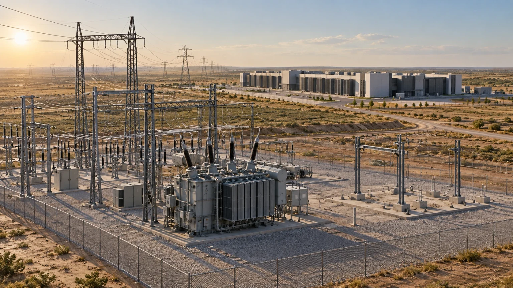
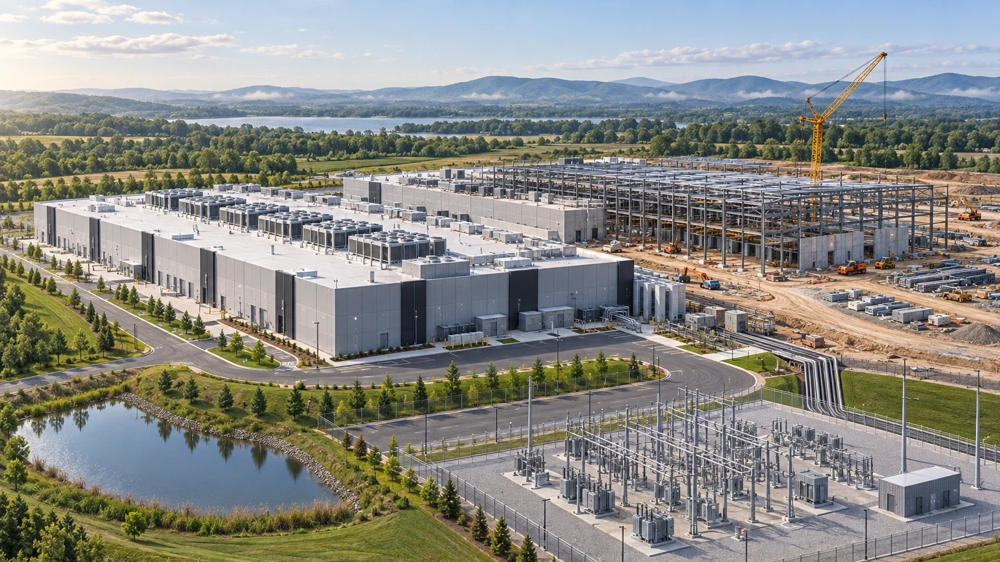

카테고리
전력·계통
계통 접속, 전력 조달, 발전·송전 투자 — 데이터센터 입지를 결정하는 전력 문제를 다룹니다. 설명 문구 시안
-
수도권 신규 계통 접속 대기가 길어지며 비수도권 데이터센터 입지 검토가 늘고 있다시안 예시
브리프 요약 두 줄 자리. 원문이 밝힌 사실과 밝히지 않은 것을 구분해 쓰고, 수치는 출처에 근거한다. 길면 두 줄에서 말줄임 처리한다.
-

ERCOT's six-week demand record turns Texas interconnection into a capacity gate
Six weeks of ERCOT load above the 2023 record, alongside a moratorium on new data-center interconnections, means Texas buyers should price interconnection delay.
-
대형 부하 접속 요청이 몰리는 변전소, 계통 보강 일정이 입지를 결정한다시안 예시
요약 자리 — 텍스트 행(썸네일 없음).
-
Data-center load is turning spare generation into a timing problem
EIA's high-demand case shows why near-term data-center growth is first a dispatch, fuel, and regional price problem.
-

Virginia's commercial power growth is becoming a peak-load test
요약 자리.